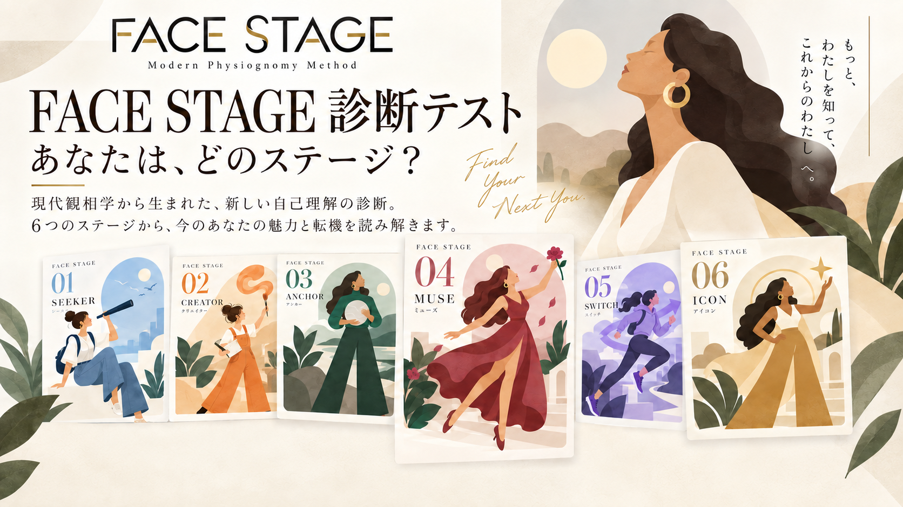
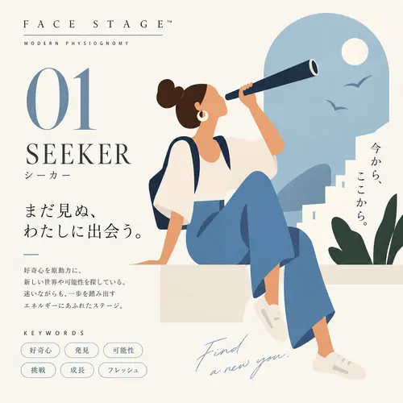
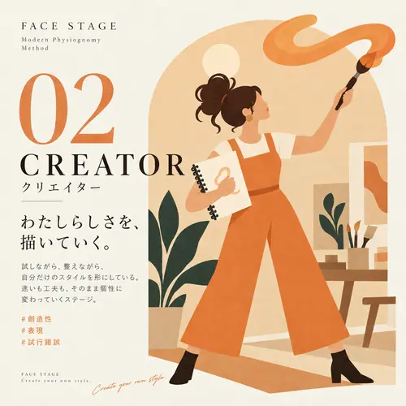
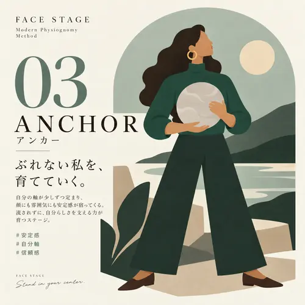
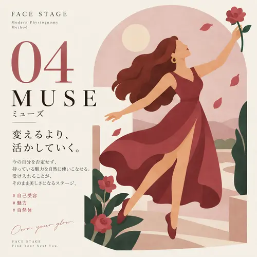
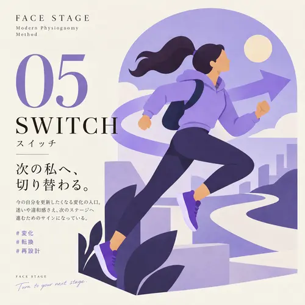
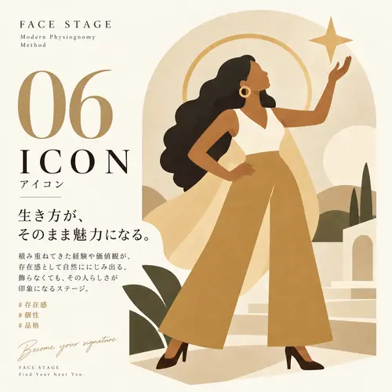
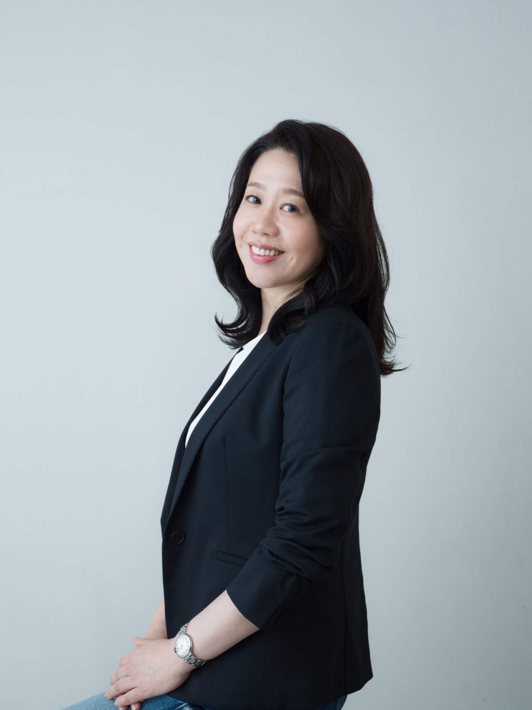

FACE STAGE SESSION
33,000円（税込）
Zoomで40分。表情・声・話し方・姿勢・仕草まで観察し、ご本人の実感や疑問と照らし合わせる観相鑑定です。
- 顔の特徴と、対話の中で伝わる印象
- 自己認識と専門家の観察の共通点・違い
- 今の自分の魅力と、活かし方のヒント
FACE STAGE / MODERN PHYSIOGNOMY
顔も、自分への見方も、変わっていく。
FACE STAGEは、今の顔との向き合い方を
6つのステージで捉える、現代観相学のメソッドです。
10の質問・約3分 ／ 優劣のない、変化するステージ

現代観相学研究所 / FACE STAGE
THE CONCEPT
現代観相学は、顔のパーツだけで性格や運命を決めつけず、外見・表情・声・姿勢・所作・接し方・言動を、状況とともに観察するための視点です。
自己診断では、質問への回答から現在の自己認識や外見との向き合い方を整理します。顔写真を測定する診断ではありません。
ステージは環境・経験・意識の変化とともに変わります。順番に進む階段でも、魅力の順位でもありません。
FOR YOU
写真の自分が、
自分のイメージと違う。
周囲に言われる印象と、
自分が思う自分に差がある。
変化を感じる今、
自分の魅力を捉え直したい。
まずは、今の自分をどう見ているのかを知ることから。
FACE STAGEは、そのための入口です。
The 6 FACE STAGES
FACE STAGEは優劣や固定的な性格分類ではありません。環境・経験・外見への意識によって変わる、現在地を表す6つのステージです。番号は分類の目印で、成長の順位ではありません。






SELF FACE × PROFESSIONAL OBSERVATION
自己診断と専門家の鑑定は、得られる情報が異なります。
その違いを照らし合わせ、今の自分を立体的に捉えていきます。
10の質問から、現在の自己認識や外見への意識を整理します。
写真や対話から、特徴・表情・声・所作などを観察します。観察範囲はメニューによって異なります。
違いがある場合も、重なる場合もあります。
専門家の観察を唯一の正解とせず、ご本人の実感と照らし合わせます。
PERSONAL READING
現代観相学の提唱者・松本智子が、今のあなたの特徴と印象を個別に読み解きます。
33,000円（税込）
Zoomで40分。表情・声・話し方・姿勢・仕草まで観察し、ご本人の実感や疑問と照らし合わせる観相鑑定です。
11,000円（税込）
正面と横顔の2枚から、写真に写る現在の特徴や印象を読み解きます。まずは鑑定書で自分を見つめ直したい方へ。
鑑定で大切にしていること
鑑定で大切にしているのは、その方への愛情です。気づいたことを丁寧に伝え、ご本人の思いや実感にも耳を傾けながら、今の自分を理解し、魅力を活かすためのヒントをお届けします。
松本智子 ／ 現代観相学研究家
WHAT YOU TAKE HOME
今の特徴・伝わる印象・魅力の活かし方を、ご自身のための鑑定書にまとめます。鑑定書のサンプルと詳しい流れは、メニューでご覧いただけます。
鑑定書のサンプル・申込みの流れを見る →性格・本心・運勢の確定や、医学的・心理学的な診断を行うサービスではありません。
CUSTOMER VOICES
自分への気づき、鑑定書の内容、やり取りで感じたこと。
これまでにいただいたご感想をご紹介します。
ZOOM鑑定のご感想
「自分の顔に自信がなかったのですが、鑑定を受けて前向きになれました。自分の顔を客観的に見ていただき、新たな気づきがたくさんありました。
鑑定書も丁寧で分かりやすく、メイクのアドバイスも早速今日から実践します。あっという間の、充実した時間でした。」
「自分で自分のことはわかっているつもりでも、そうではなかったんだなと気づけました。説明の随所に愛情が感じられ、安心感に包まれながら心地よく拝読しました。」
「自分では決してたど着くことができない、大きなヒントをいただきました。今後の自分に活かせる内容が盛り沢山でした。」
「客観的で現実的な鑑定内容で、何度も見返したくなります。」
「メッセージで質問した時から、終始本当に優しくご対応してくださり、とても信頼できる鑑定士様です。」
過去のご感想の出典：ココナラで提供した観相鑑定（2024〜2025年）。原文から一部抜粋・整文。
当時のサービスに寄せられたもので、現行メニューとは内容・提供方法が異なります。感じ方には個人差があります。
COURSE
人相・観相に関心がある方、対人理解の視点を学びたい方へ。現代観相学の基礎を、自宅で学べる動画講座です。
顔の特徴だけで決めつけず、表情や印象を含めて人を観察する考え方を学びます。個人鑑定は「自分を知る」、講座は「見方を学ぶ」ための入口です。
講座内容・受講料を確認する ↗MODERN PHYSIOGNOMY
日々の人間関係に。
人と向き合う仕事に。
観察と理解のための新しい視点を。

FOUNDER / 現代観相学の提唱者
現代観相学研究家・メイクアップアーティスト
FACE STAGEメソッド開発者
HPをご覧くださり、ありがとうございます
メイクアップアーティスト・眉技術講師として、国内外1万人以上の顔と向き合ってきました。
顔にはその人の内面や生き方が表れると感じ、日本・中国・欧米の人相学・観相学を15年以上学びました。
古い人相学には納得できる経験則がある一方、吉凶を決めつける偏りも多いと気づきました。
私自身も50代を迎え、年齢による変化は積み重ねてきた時間の証だと感じています。
現代観相学は、運命ではなく、可能性を読み解くものです。
美醜とは違う視点で、その人だけの魅力を見つけ、活かすヒントをお伝えします。
COLUMN
FACE STAGEの考え方を、3つの切り口から。
「目は口ほどにものを言う」という言葉があります。現代観相学では、目のかたち・動き・表情が何を語っているのかを、美容や印象管理の視点から読み解きます。
READ MORE → 02メイクは単なる「見た目の変化」ではありません。顔に表れる印象を読み解くフィジオノミーの視点から、メイクが持つ本当の力について考えます。
READ MORE → 03外見へのこだわりが強まるとき、その裏には何があるのか。美醜判断ではなく「自分らしさ」を軸にする現代観相学の視点から、外見との向き合い方を考えます。
READ MORE →FAQ
CONTACT
鑑定・講座・メディア取材・コラボレーション・講演などのご相談は、以下のフォームよりお気軽にどうぞ。
通常1営業日以内にご返信いたします。
※ 生年月日をご記載いただくと、鑑定の際にプラスの情報をお伝えできます。